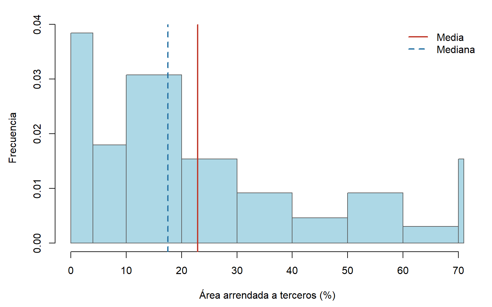
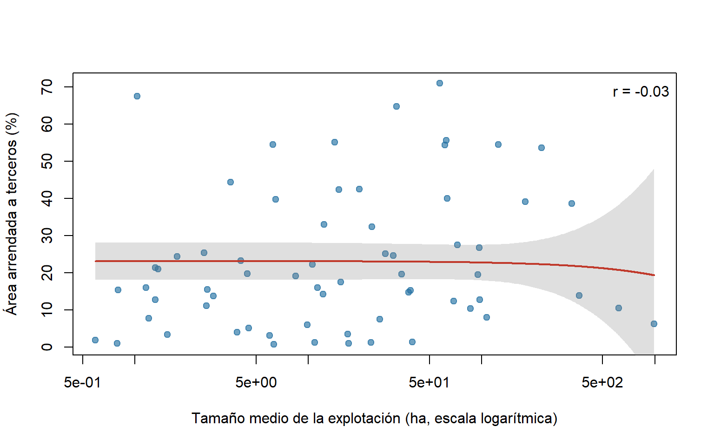
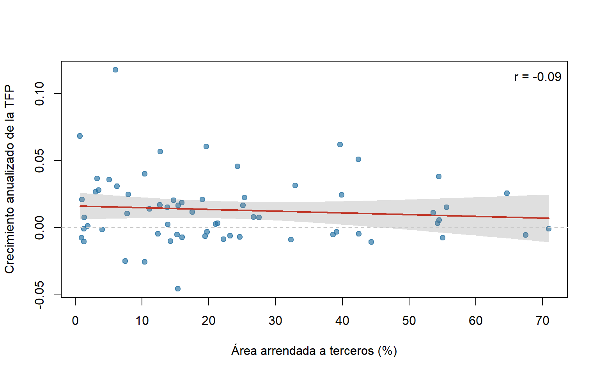
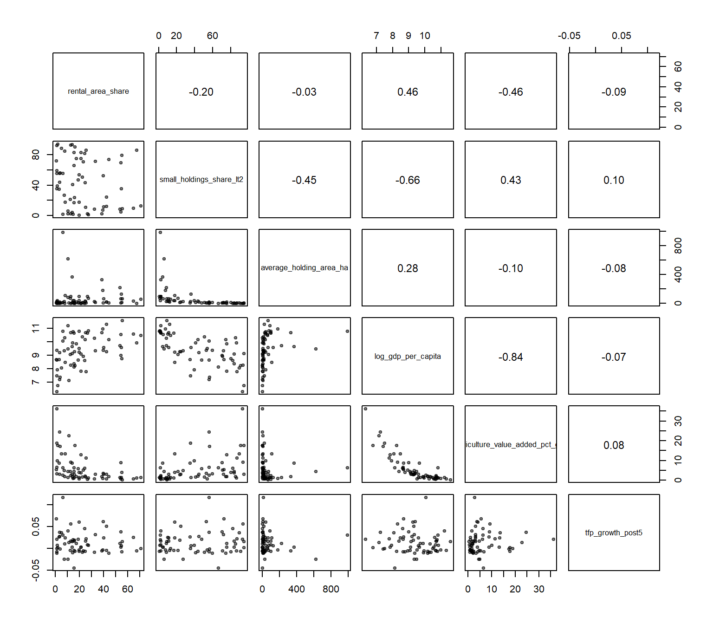
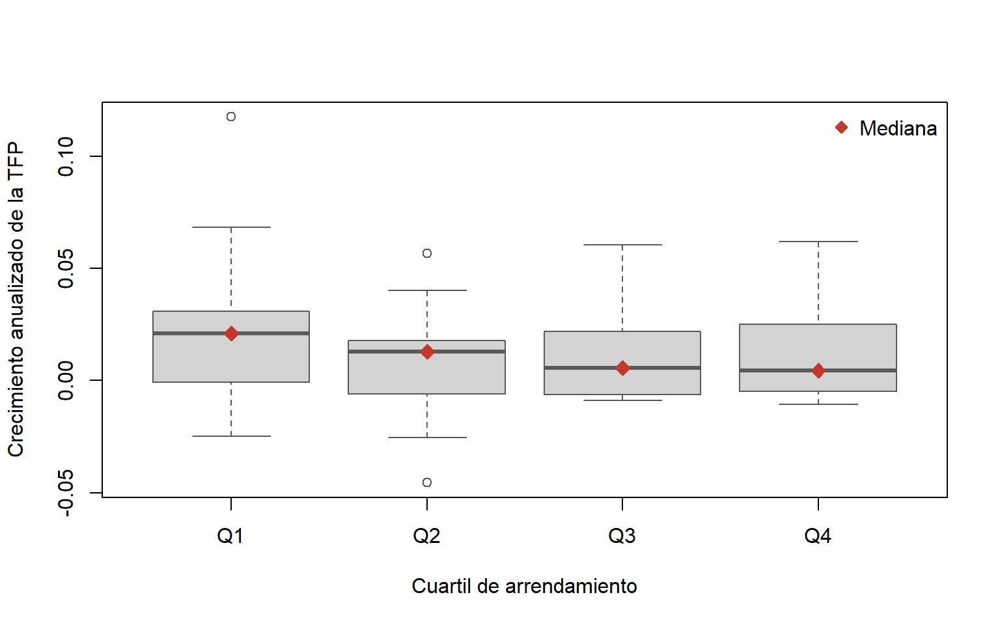

| variable | n | media | mediana | sd | min | p25 | p75 | max |
|---|---|---|---|---|---|---|---|---|
| rental_area_share | 65 | 22.8755 | 17.5200 | 18.7071 | 0.7200 | 7.9400 | 32.9500 | 70.9000 |
| small_holdings_share_lt2 | 64 | 42.8383 | 42.1188 | 32.2323 | 0.7877 | 10.7877 | 72.5984 | 94.3005 |
| average_holding_area_ha | 65 | 65.5172 | 15.0200 | 153.4931 | 0.5900 | 3.8900 | 61.4700 | 988.4400 |
| log_gdp_per_capita | 65 | 9.3726 | 9.3726 | 1.2003 | 6.3216 | 8.6551 | 10.3713 | 11.5763 |
| agriculture_value_added_pct_gdp | 65 | 5.9688 | 3.1709 | 6.8406 | 0.2684 | 1.5226 | 6.7252 | 36.1503 |
| tfp_growth_post5 | 65 | 0.0132 | 0.0080 | 0.0256 | -0.0455 | -0.0050 | 0.0247 | 0.1175 |
| tfp_growth_post3 | 65 | 0.0128 | 0.0057 | 0.0365 | -0.0925 | -0.0083 | 0.0290 | 0.1846 |
| tfp_growth_pre5 | 64 | 0.0075 | 0.0066 | 0.0243 | -0.0565 | -0.0065 | 0.0198 | 0.0714 |
6 Correlaciones y estadísticos
1 Estadística descriptiva
La Tabla 4 resume la distribución de las variables que entran al análisis. La prevalencia del arrendamiento es muy heterogénea: en promedio el 22.9 % del área agrícola se arrienda a terceros, pero la mediana es 17.5 % y el rango va de 0.7 % a 70.9 %, con una desviación estándar de 18.7 puntos porcentuales (pp). Que la media supere a la mediana indica una distribución asimétrica a la derecha, con pocos países donde el arriendo es la forma dominante de acceso a la tierra. Esta dispersión es coherente con la literatura, según la cual el arrendamiento depende de las restricciones legales, de la seguridad de la tenencia y de la historia agraria de cada país, de modo que una misma proporción de tierra arrendada puede reflejar mercados muy distintos (Deininger et al., 2008; Macours et al., 2010; Rozelle y Swinnen, 2004).
La estructura agraria también es muy desigual. El tamaño medio de la explotación promedia 65.5 ha frente a una mediana de 15.0 ha, con un máximo de 988.4 ha: unos pocos países con explotaciones muy grandes elevan el promedio, mientras que en la mayoría predominan las unidades pequeñas (Lowder et al., 2016; Deininger y Byerlee, 2012). Esta asimetría extrema justifica el uso del logaritmo del tamaño en el modelo (Tabla 3). La proporción de explotaciones menores de dos hectáreas promedia 42.8 % y va de 0.8 % a 94.3 %, con un rango intercuartílico de 10.8 % a 72.6 %. La muestra combina, por tanto, países de agricultura comercial de gran escala con países dominados por la pequeña explotación, una brecha que la literatura asocia con las diferencias internacionales de productividad agrícola (Adamopoulos y Restuccia, 2014).
Los controles de desarrollo también varían mucho. El logaritmo del PIB per cápita va de 6.32 a 11.58, lo que equivale a una razón de alrededor de 190 veces entre el país más pobre y el más rico de la muestra. El valor agregado agrícola promedia 6.0 % del PIB, pero su mediana es 3.2 % y alcanza 36.2 %: la mayoría de las economías tiene un sector agrícola pequeño y pocas siguen siendo predominantemente agrarias. Esta combinación es la esperable en un corte transversal de países en distintas etapas de la transformación estructural (Gollin et al., 2002; Restuccia et al., 2008).
Finalmente, el crecimiento anualizado de la TFP en los cinco años posteriores al censo promedia 1.3 % (mediana 0.8 %), con una desviación estándar de 2.6 pp y valores entre −4.6 % y 11.8 %. El crecimiento previo al censo promedia 0.75 %, algo menor, aunque esa diferencia no se ha contrastado. La desviación estándar es mayor con el horizonte de tres años (3.7 pp) que con el de cinco (2.6 pp), lo que sugiere que las ventanas cortas amplifican la volatilidad anual propia de la TFP agrícola, sensible al clima y a los errores de medición (Ortiz-Bobea et al., 2021; Coelli y Rao, 2005), y respalda el horizonte de cinco años como medida principal. Dos variables (la proporción de explotaciones pequeñas y el crecimiento previo de la TFP) tienen 64 observaciones en lugar de 65 por un dato faltante.
Tabla 4: Estadística descriptiva
2 Distribución del arrendamiento y estructura agraria
La Figura 1 muestra que la participación de tierra arrendada, la clase más frecuente reúne 20 países, otros 10 países arriendan menos de 4 % de su área agrícola y cerca de tres de cada cuatro o 47 de 65 arriendan menos de 30 %. Solo 9 países superan el 50 % y apenas uno se acerca al 70 %. La asimetría implica que la media sobrestima el nivel típico y que los pocos países con arrendamiento alto pueden tener una influencia desproporcionada en las estimaciones, lo que respalda los errores estándar HC3 y la revisión con la distancia de Cook (Long y Ervin, 2000; Cook, 1977).

La forma de la distribución tiene una lectura económica. Un arrendamiento bajo en muchos países puede reflejar restricciones legales o derechos de tenencia inseguros que desalientan el arriendo y es posible que una parte de los arriendos informales no quede registrada en los censos. En el otro extremo, los países con arrendamiento alto suelen ser aquellos donde los mercados de trabajo no agrícolas permiten que los hogares dejen de cultivar y cedan su tierra o donde las reformas de la transición, como las de Europa central y oriental, generaron mercados de arriendo extensos.
La Figura 2 relaciona el tamaño medio de la explotación con la participación de tierra arrendada y no muestra una asociación clara ya que la recta de ajuste es casi horizontal y la correlación es prácticamente nula de r = −0.03, la gran mayoría de los países se concentra por debajo de 100 ha, y dentro de ese grupo el arrendamiento va de menos de 1 % a más de 70 %, de modo que el tamaño de las explotaciones no distingue por sí solo a los países que arriendan más. La banda de confianza se ensancha con fuerza a partir de unas 250 ha porque solo cinco países superan las 200 ha, y los dos más extremos que son cerca de 620 y 990 ha, con arrendamiento de 10 % y 6 % tienen un peso desproporcionado sobre la pendiente.

Esta falta de patrón es coherente con que el arriendo cumple funciones distintas según el contexto. En economías de pequeños productores permite que hogares con poca tierra amplíen su superficie operada y que propietarios con menor interés en cultivar la cedan, en sistemas de explotaciones grandes y comerciales sirve para ajustar la superficie sin comprar tierra, como ocurre en los nuevos Estados miembros de la Unión Europea y en los países con abundancia de tierra aparecen explotaciones muy grandes cuya escala responde sobre todo a la dotación de recursos y a la agricultura comercial.
3 Arrendamiento y crecimiento de la TFP
La Figura 3 muestra la relación de la prevalencia del arrendamiento frente al crecimiento de la TFP en los cinco años posteriores al censo, la recta de ajuste tiene una pendiente levemente negativa y la nube de puntos es muy dispersa, la correlación es r = −0.09, de modo que el arrendamiento explica menos del 1 % de la variación del crecimiento de la TFP, la pendiente bivariada equivale a una diferencia de apenas −0.13 pp anuales de crecimiento de la TFP por cada 10 pp adicionales de área arrendada, cerca del 5 % de la desviación estándar del crecimiento de la TFP. Entre países con arrendamiento similar de 10 % a 25 %, el crecimiento de la TFP va de −4.6 % a más de 6 %, lo que indica que otros factores pesan mucho más. El signo negativo es opuesto al que anticipa la teoría de la reasignación, pero una recta horizontal cabe dentro de la banda de confianza en todo el rango, por lo que la pendiente no se distingue de cero.
Varias razones explican por qué el arrendamiento agregado se asocia tan poco con el crecimiento de la TFP. Primero, la prevalencia no equivale a efectividad con derechos inseguros la tierra se arrienda a allegados y no a quienes la usan mejor, las restricciones legales reducen la eficiencia y aun con certificación de tierras, persisten fricciones que limitan las ganancias; un mismo porcentaje puede corresponder a una reasignación productiva o a una meramente nominal. Segundo, la seguridad de la tenencia condiciona la inversión, un canal que esta variable no capta. Tercero, el crecimiento de la TFP depende de factores ajenos al arrendamiento, como el cambio tecnológico, el clima y la difusión de variedades mejoradas, y se mide con error al comparar países. Cuarto, con 65 países el poder estadístico es limitado, por lo que un coeficiente no significativo no equivale a ausencia de efecto. Por último, los dos países con mayor crecimiento de la TFP cerca de 12 % y 7 % anual tienen un arrendamiento inferior al 7 %; son observaciones influyentes que podrían generar parte de la pendiente negativa, razón por la cual la distancia de Cook forma parte de las pruebas de robustez.

4 Correlaciones
La Tabla 5 presenta los coeficientes de correlación entre las variables del modelo, con 65 observaciones hay un coeficiente es significativo al 5 % cuando su valor absoluto supera 0.24 y al 1 % cuando supera 0.32. Para calificar la magnitud se sigue la clasificación de Schober donde débil de 0.10 a 0.39, moderada de 0.40 a 0.69 y fuerte de 0.70 a 0.89.
El resultado principal es que ninguna variable estructural o de desarrollo se asocia con el crecimiento de la TFP: todos los coeficientes con tfp_growth_post5 son menores que 0.11 en valor absoluto y sus valores p superan 0.40, es decir, magnitudes despreciables según Schober et al. (2018). Esto es consistente con la idea de que la prevalencia del arrendamiento es un indicador agregado limitado, pero una correlación bivariada nula no descarta asociaciones condicionales, y la falta de significancia con una muestra pequeña no prueba que no exista relación.
El arrendamiento sí se vincula con el nivel de desarrollo, se correlaciona de forma moderada y positiva con el PIB per cápita y de forma moderada y negativa con el peso de la agricultura en el PIB, los países más ricos y menos agrarios arriendan más tierra, como predice la literatura cuando los mercados de trabajo no agrícolas permiten que los hogares dejen de cultivar y cedan su tierra, y cuando las instituciones hacen más segura la tenencia. Esto indica que, sin controlar por desarrollo, la prevalencia del arrendamiento captaría en parte el grado de transformación estructural de cada país, que es la razón por la que el PIB per cápita y el peso agrícola entran como controles.
La estructura agraria sigue el mismo gradiente. La proporción de explotaciones menores de dos hectáreas se asocia de forma moderada con un menor PIB per cápita y con un mayor peso agrícola, y el tamaño medio de la explotación aumenta débilmente con el ingreso en línea con la evidencia de que las explotaciones son más pequeñas y numerosas en los países pobres y más grandes en los ricos. La correlación entre arrendamiento y explotaciones pequeñas es débil y no significativa y los países con más explotaciones muy pequeñas tienden a arrendar algo menos, lo que podría reflejar que, donde la tenencia es insegura y hay restricciones, el arriendo es menos frecuente.
La correlación más alta es la del PIB per cápita con el peso de la agricultura y comparten cerca del 70 % de su varianza, como corresponde a la relación clásica entre ingreso y transformación estructural. Para ese par, el factor de inflación de la varianza bivariado sería cercano a 3.3, aunque estos no son reglas rígidas; conviene, para el tamaño medio y las explotaciones pequeñas el VIF bivariado sería cercano a 1.25, lo que atenúa la preocupación por multicolinealidad señalada en la valoración de las variables.
Tabla 5: Correlaciones
| Variable | rental_area_share | small_holdings_share_lt2 | average_holding_area_ha | log_gdp_per_capita | agriculture_value_added_pct_gdp | tfp_growth_post5 |
|---|---|---|---|---|---|---|
| rental_area_share | 1.000 | -0.205 | -0.032 | 0.456 | -0.456 | -0.094 |
| small_holdings_share_lt2 | -0.205 | 1.000 | -0.449 | -0.655 | 0.427 | 0.101 |
| average_holding_area_ha | -0.032 | -0.449 | 1.000 | 0.284 | -0.099 | -0.084 |
| log_gdp_per_capita | 0.456 | -0.655 | 0.284 | 1.000 | -0.836 | -0.069 |
| agriculture_value_added_pct_gdp | -0.456 | 0.427 | -0.099 | -0.836 | 1.000 | 0.075 |
| tfp_growth_post5 | -0.094 | 0.101 | -0.084 | -0.069 | 0.075 | 1.000 |
La Figura 4 muestra la matriz de dispersión que acompaña a la Tabla 5 y permite revisar visualmente los supuestos de los coeficientes de Pearson.

5 ANOVA por cuartiles de arrendamiento
La Figura 5 compara el crecimiento de la TFP según cuartiles de la prevalencia del arrendamiento, los cortes son aproximadamente 7.9 % (Q1), 17.5 % (Q2) y 33.0 % (Q3), y cada grupo reúne alrededor de 16 países. Las medianas del crecimiento de la TFP disminuyen de Q1 cerca de 2.1 % anual a Q2 (1.3 %), Q3 (0.6 %) y Q4 (0.5 %), pero las cajas se superponen casi por completo, la dispersión dentro de cada grupo es mucho mayor que la diferencia entre medianas y los cuatro grupos incluyen países con crecimiento negativo. El Q1 es además el grupo más disperso y contiene los dos valores más altos de la muestra cerca de 12 % y 7 %, que pueden elevar su media, y el Q2 contiene el más bajo de −4.6 %. Con grupos tan pequeños, un contraste de medias es sensible a esas observaciones.
Una posible explicación de la mediana algo mayor en el cuartil de menor arrendamiento es la convergencia. La Tabla 5 muestra que los países que arriendan menos tienden a ser más pobres y más agrarios, y estos pueden crecer más rápido porque parten de niveles bajos de TFP, mientras que en los países de ingreso alto el margen de mejora es menor. Como el modelo no incluye el nivel inicial de la TFP, esta diferencia podría deberse al desarrollo y no al arrendamiento, y es coherente con que la TFP agrícola ha crecido a ritmos desiguales según el período y el grupo de países.

La Tabla 6 resume el contraste de medias entre cuartiles. El estadístico F no permite rechazar la igualdad de medias, lo que es coherente con la superposición de las cajas y con la debilidad de la asociación descrita.
Tabla 6: ANOVA del crecimiento de la TFP por cuartiles de arrendamiento
| Fuente | Df | Suma de cuadrados | Media cuadrática | F | p |
|---|---|---|---|---|---|
| Cuartiles de arrendamiento | 3 | 0.0018 | 6e-04 | 0.9061 | 0.4434 |
| Residuos | 61 | 0.0402 | 7e-04 | NA | NA |
Tabla 7: Comparaciones múltiples de Tukey entre cuartiles
| Comparación | Diferencia | IC 95% inferior | IC 95% superior | p ajustado | |
|---|---|---|---|---|---|
| Q2-Q1 | Q2-Q1 | -0.0142 | -0.0378 | 0.0094 | 0.3931 |
| Q3-Q1 | Q3-Q1 | -0.0102 | -0.0338 | 0.0134 | 0.6668 |
| Q4-Q1 | Q4-Q1 | -0.0090 | -0.0326 | 0.0147 | 0.7480 |
| Q3-Q2 | Q3-Q2 | 0.0040 | -0.0200 | 0.0280 | 0.9709 |
| Q4-Q2 | Q4-Q2 | 0.0052 | -0.0188 | 0.0292 | 0.9389 |
| Q4-Q3 | Q4-Q3 | 0.0012 | -0.0228 | 0.0252 | 0.9991 |
6 Modelo MCO del Objetivo 2
Como complemento a la evidencia descriptiva, se estima el modelo de regresión planteado en la metodología. La Tabla 8 presenta los coeficientes del modelo base y del modelo con interacción, con errores estándar robustos HC3. El arrendamiento se expresa por cada 10 puntos porcentuales para facilitar la lectura del coeficiente.
Tabla 8: Modelo MCO del crecimiento de la TFP (errores estándar HC3)
| Variable | Modelo base | p (base) | Modelo con interacción | p (interacción) | |
|---|---|---|---|---|---|
| (Intercept) | Intercepto | 0.0015 (0.0526) | 0.978 | -0.0210 (0.0769) | 0.786 |
| rental_10pp | Arrendamiento (por 10 pp) | -0.0013 (0.0022) | 0.568 | -0.0000 (0.0024) | 0.987 |
| average_holding_area_ha | Tamaño medio (ha) | -0.0000 (0.0000) | 0.731 | -0.0000 (0.0001) | 0.856 |
| log_gdp_per_capita | Log PIB per cápita | 0.0015 (0.0053) | 0.782 | 0.0031 (0.0074) | 0.682 |
| agriculture_value_added_pct_gdp | Valor agregado agrícola (% PIB) | 0.0003 (0.0008) | 0.685 | 0.0003 (0.0009) | 0.715 |
| small_holdings_share_lt2 | Explotaciones < 2 ha | 0.0002 (0.0002) | 0.462 | ||
| rental_10pp:small_holdings_share_lt2 | Arrendamiento × Explotaciones < 2 ha | -0.0000 (0.0000) | 0.520 |
Tabla 9: Estadísticos de ajuste de los modelos
| Modelo | N | R² | R² ajustado | F | p (F) |
|---|---|---|---|---|---|
| Base | 65 | 0.0183 | -0.0471 | 0.2799 | 0.8899 |
| Con interacción | 64 | 0.0281 | -0.0742 | 0.2748 | 0.9465 |
Los resultados del modelo son consistentes con la lectura descriptiva: el coeficiente del arrendamiento es pequeño e impreciso, y el modelo explica una fracción muy baja de la variación del crecimiento de la TFP. Con 65 observaciones, la ausencia de significancia no debe interpretarse como ausencia de relación, sino como evidencia limitada en una muestra pequeña.